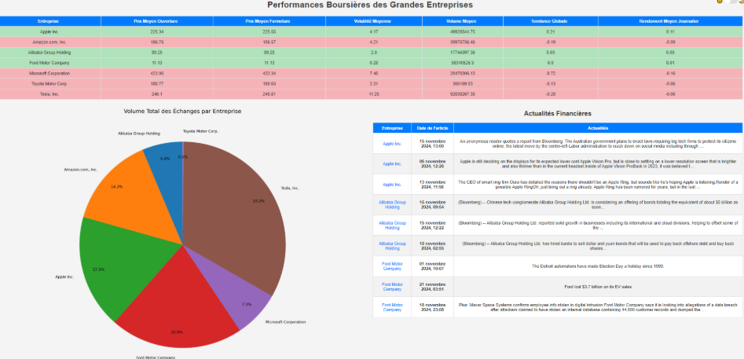
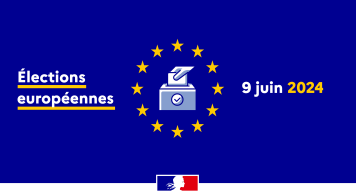
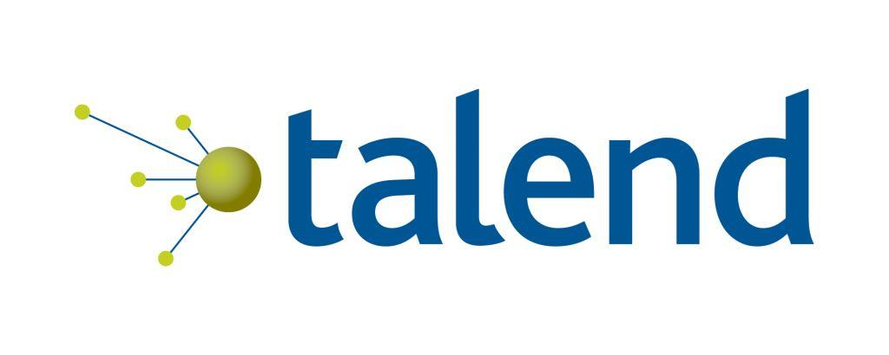
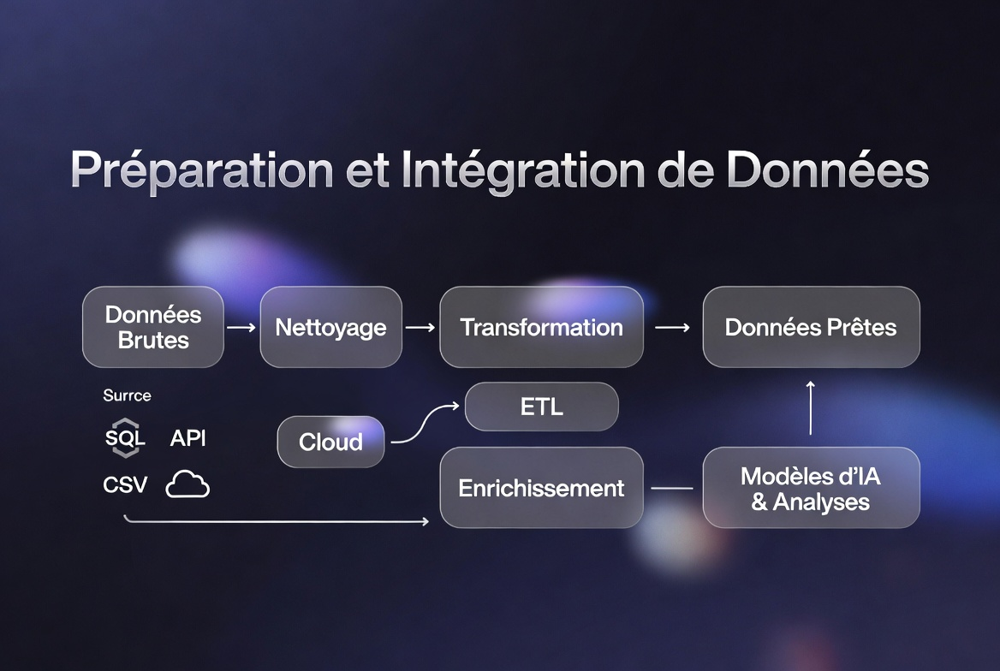

Étudiant en BUT Science des Données — spécialité Visualisation & Outils décisionnels. Je transforme des données brutes en valeur concrète.
Le projet phare de ma formation — démarche complète, résultats concrets.
BourseTrack est une application web conçue pour suivre et analyser les performances financières des grandes entreprises, enrichies par des actualités pertinentes pour offrir une compréhension globale des tendances économiques.

Analyse de données, visualisation, machine learning, Business Intelligence.



Un panorama des outils et technologies acquis au fil de la formation.
Liste non exhaustive — extraite de mes projets de formation.
De la découverte de la data science jusqu'à aujourd'hui.
Je m'appelle Sidy Babacar, étudiant en 2ème année de BUT Science des Données à l'IUT Grand Ouest Normandie, spécialité Visualisation et Outils décisionnels.
Ce portfolio rassemble les projets réalisés au fil de ma formation : analyses statistiques, modèles prédictifs, dashboards interactifs et bien plus encore.
Actuellement disponible, je recherche des opportunités pour mettre mes compétences en pratique dans un environnement professionnel.
IUT Grand Ouest Normandie · 2022 – 2025 · Disponible dès maintenant
Consultez mon CV directement ici ou télécharge-le en PDF.
Une opportunité ou un projet ? Écris-moi directement.